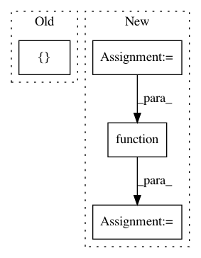

186056b878a0a9dd576b684106fb4ddaa4af246c,theano/gpuarray/tests/test_dnn.py,,test_dnn_batchnorm_train_without_running_averages,#,1480
Before Change
// backward pass
grads = T.grad(None, wrt=[x, scale, bias], known_grads={out: dy})
// compile
f_abstract = theano.function([x, scale, bias, dy], [out, x_mean, x_invstd] + grads, mode=mode_with_gpu)
// check if the abstract Ops have been replaced
assert any([isinstance(n.op, dnn.GpuDnnBatchNorm)
for n in f_abstract.maker.fgraph.toposort()])
After Change
[out_gpu, x_mean_gpu, x_invstd_gpu] +
grads_gpu,
mode=mode_with_gpu)
f_abstract = theano.function([x, scale, bias, dy],
[out_abstract, x_mean_abstract, x_invstd_abstract] +
grads_abstract,
mode=mode_with_gpu)
// check if the abstract Ops have been replaced
assert any([isinstance(n.op, dnn.GpuDnnBatchNorm)
for n in f_abstract.maker.fgraph.toposort()])
assert any([isinstance(n.op, dnn.GpuDnnBatchNormGrad)
In pattern: SUPERPATTERN
Frequency: 3
Non-data size: 4
Instances
Project Name: Theano/Theano
Commit Name: 186056b878a0a9dd576b684106fb4ddaa4af246c
Time: 2017-01-30
Author: gvtulder@gmail.com
File Name: theano/gpuarray/tests/test_dnn.py
Class Name:
Method Name: test_dnn_batchnorm_train_without_running_averages
Project Name: raghakot/keras-vis
Commit Name: 1cfa7fe6827b8e83ddd92d5d822277f6b7a77c39
Time: 2016-12-12
Author: ragha@outlook.com
File Name: optimizer.py
Class Name: Optimizer
Method Name: __init__
Project Name: hyperspy/hyperspy
Commit Name: 5baf2540e6d2dcdfb246f197c697b9c0bb021295
Time: 2018-04-12
Author: eric.prestat@gmail.com
File Name: hyperspy/component.py
Class Name: Component
Method Name: __call__